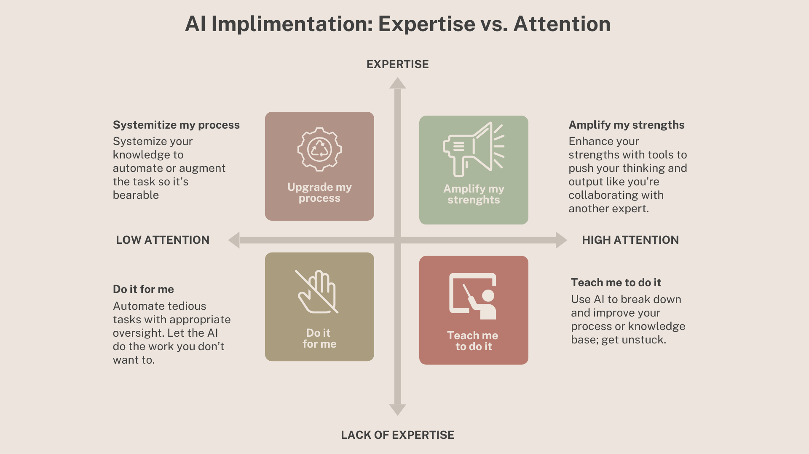

Sam Altman has a pitch he's been repeating for a while now, and he made the cleanest version of it at BlackRock's U.S. Infrastructure Summit in March 2026: "We see a future where intelligence is a utility, like electricity or water, and people buy it from us on a meter." Intelligence on tap. Expertise flowing from the wall, metered by the token.
It's a seductive vision, and nowhere more seductive than in Learning and Development. If expertise is a utility, then training becomes a plumbing problem. Pipe the right knowledge into the right person at the right time, have them click approve, and you're done.
No more need for expensive hiring processes. No more instructional designers wrestling with objectives. No more facilitators sweating through a workshop. Just intelligence, delivered.
I think this model of expertise is wrong, and I think it's especially wrong for anyone whose job is to help others learn. In my last piece I argued that the real skill in 2026 is actively judging AI as a collaborator rather than instructing it as a tool.
Expertise doesn't come from a tap
Expertise isn't a quantity of information. It's an accumulation of experiences that you've reflected on enough to recognize their shape when they show up again in new contexts. It's the ability to connect what happened last Tuesday to what's happening right now and know, without quite being able to explain it, that these two things rhyme.
You don't get expertise from a firehose of mostly correct answers. You get it from grappling with big questions, from being confused, trying something, being wrong, and figuring out why. Struggle isn't an unfortunate side effect of learning that we can engineer away with better tools or "expertise on tap".
The struggle is the learning.
That's been the consensus across cognitive science for decades, from Bjork's work on desirable difficulties to the learning-sciences literature on productive failure.
Ask any experienced manager whether their worst project taught them more than their smoothest one.
Which means the Altman pitch, applied to L&D, doesn't just oversell AI. It misunderstands what the profession is doing in the first place. If you automate away the grappling, you haven't produced a learner. You've produced someone who briefly observed some information. And organizations feel that downstream.
Retention suffers when employees can't grow into more complex work. Internal mobility stalls when people can't build on what they should have learned last quarter. The cost of hollow training isn't the training budget. It's every skill gap the company has to hire around instead of develop.
The 2x2 I actually use
Here's the framework I walk teams through when they ask me where AI belongs in their work. Two axes: your expertise in the task, and the attention you're willing to give it.

Amplify my strengths (expertise + high attention): You're an expert and the work has your focus. AI acts like a collaborator, pushing your thinking, catching holes, drafting the next iteration faster than you could alone. This is, honestly, the best use of AI.
Upgrade my process (expertise + low attention): You know how to do the work but it drains you. AI systematizes it, automates the parts you can still supervise, makes the tedious bearable. Think automating paperwork when you know where the risks for failure are.
Teach me to do it (lack of expertise + high attention): You're curious but green in this skill. AI becomes a tutor, breaking concepts down, coaching you through unfamiliar terrain, helping you build the expertise you want.
Do it for me (lack of expertise + low attention): You don't know how and you aren't paying close attention. AI just handles it.
That last quadrant is where most people instinctively reach first, and it's the most dangerous one. Here's why: if you don't have expertise in the domain, you can't tell when the AI is wrong. And if you're not paying attention, you won't catch it. You get the convenience of automation and the blindness of inexperience at the same time.
I have a personal meter stick for this. Every few months I ask an AI to write me a training plan on pinwheel marketing. I read two books on it years ago, so I have just enough expertise to immediately spot when the AI is confident and wrong, confident and right, or confidently making something up. It's become my cheapest way to re-calibrate how much I should trust any given model. Try it with a topic you half-know. You'll be surprised how often the output is fluent, plausible, and off.
Where AI belongs in learning design
Not everything in L&D is learning. The learner's cognitive lift is connecting new ideas to their own experience, struggling toward fluency, incorporating feedback. Nobody can do that for anyone else and it can't be automated.
Same is true for the designer's cognitive lift, which people forget is also learning. You can't design around an intellectual trap you haven't walked into yourself. You can't anticipate a learner's wrong turn if you've never taken it. The expertise that makes training work is earned the same way the learning is — through grappling with the material until you see its shape.
Everything else is production: the materials, the environments, the artifacts that hold the experience together. That's where AI belongs.
The core design work — the part that requires the designer's own grappling — lives in the amplify quadrant for an experienced practitioner: empathy interviews, needs analysis, research into how adults acquire a particular skill, decisions about where to place friction.
AI can scan a hundred transcripts for patterns, pull the relevant research faster than you could, and stress-test your design from a skeptical stakeholder's point of view. What it can't do is the judgment underneath: whether a pattern matters, whether a paper applies, whether the design will actually move behavior with this community of learners. That stays with the expert.
What AI changes is what happens after the empathic design decisions are made. The production work that used to cost a week of energy now costs an afternoon. Where another consultant would hand a client a one-pager and a slide deck, I can hand them an interactive website they click through, a roleplay scenario the AI runs with them, a short video that dramatizes the concept. These used to require budgets and production teams. Now they require expertise, AI proficiency, and good taste.
That's the real unlock. Not cheaper learning — richer learning. The same design thinking, poured into better containers.
The fallacy
The fallacy I keep seeing in L&D is the assumption that because AI can produce polished training artifacts, it can design training. These are not the same skill. Organizing accurate slides has never been the heart or bottleneck of learning and development. Understanding a human need, empathizing with a specific audience, and designing something that breaks people out of routine and pushes for actual behavior change — that is the core of educational expertise. AI doesn't replace it. AI amplifies what the people who understand these needs can do with 40 hours a week.
There's a related fallacy worth naming: that working with AI requires less human expertise, not more. The opposite is true. The more capable the tool, the more expertise you need to aim it. If you hand a junior designer a state-of-the-art model and no grounding in adult learning theory, you'll get good-looking training that doesn't teach anyone anything you couldn't get from a quick ChatGPT query. If you hand the same model to someone with twenty years of practice, you'll get work that wasn't possible a year ago.
Expertise isn't a utility, even if tokens are. And the struggle of learning, not the artifact of it afterward, is something humans will always have to do for themselves (with the help of educators and tools of course).
The seduction of automating expertise is real. Resist it, and you will build better teams, training, and learners.
Thinking about how AI fits into your L&D practice without hollowing out what makes it work? Let's talk.